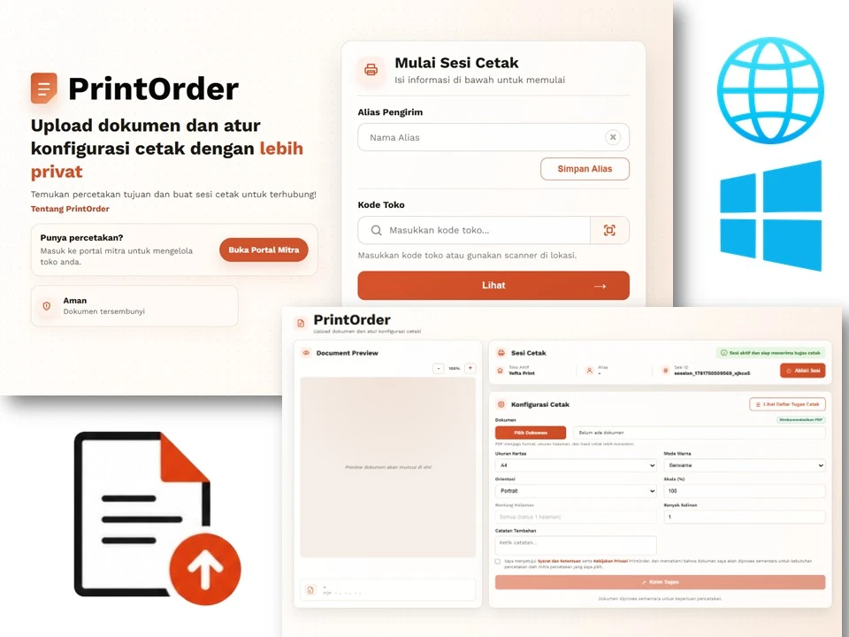
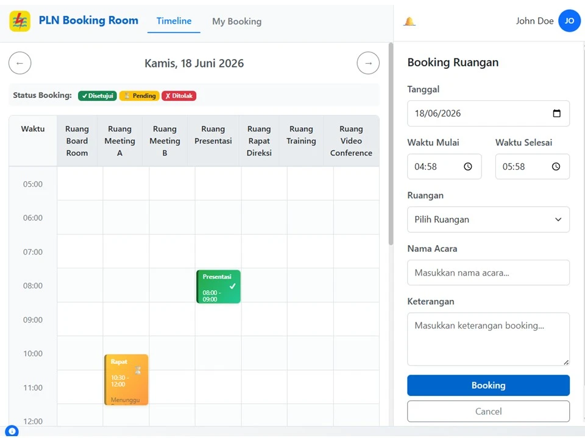
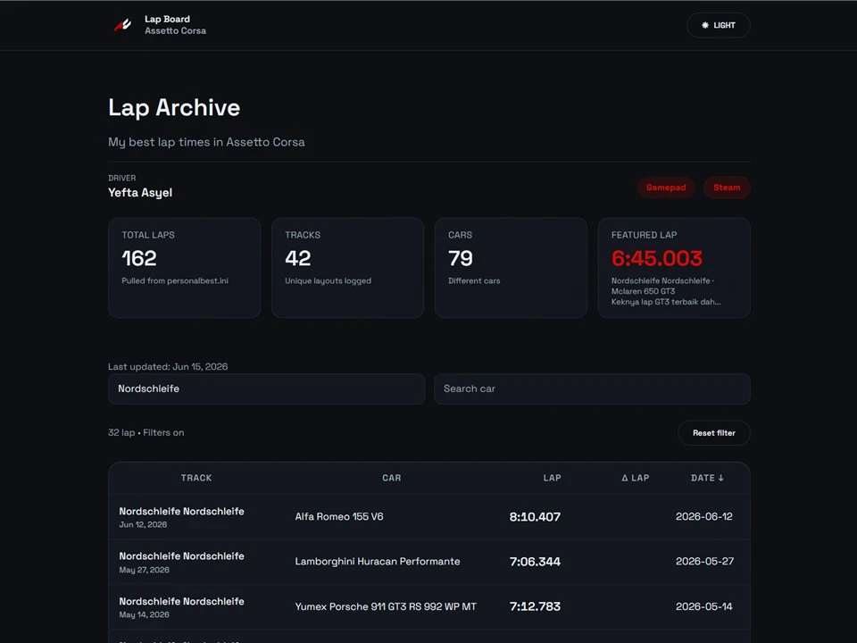

Practical Software
Build tools based on real workflow problems.
Informatics student and tech enthusiast
My work focuses on web applications, desktop, and mini utilities.
View Projects
Focus Areas
Build tools based on real workflow problems.
I work with browser-based applications and .NET utilities.
I improve through complete projects, testing, and iteration.
Solving some workflow problems...
A self-service document printing platform that helps customers send documents to print shops in a more centralized, practical, and highly secure manner.
Node.js, PostgreSQL, .NET, HTML, CSS, JavaScript
Try for Free
A room booking web app featuring visual timelines, approval workflows, and full admin management, enabling employees to easily check availability and reserve rooms.
PHP, Bootstrap, MySQL
View Project
A public lap archive site for Assetto Corsa that reads straight from personalbest.ini.
Astro, React, JavaScript, GitHub Action
View Mine
A simple skills overview grouped by the areas commonly used in web, desktop, data, and deployment work.
HTML, CSS, JavaScript
Node.js, PHP, REST API
PostgreSQL, MySQL
.NET, Windows Forms
Git, GitHub
Have a project idea, collaboration request, or problem to discuss? Reach me directly through one of these channels.